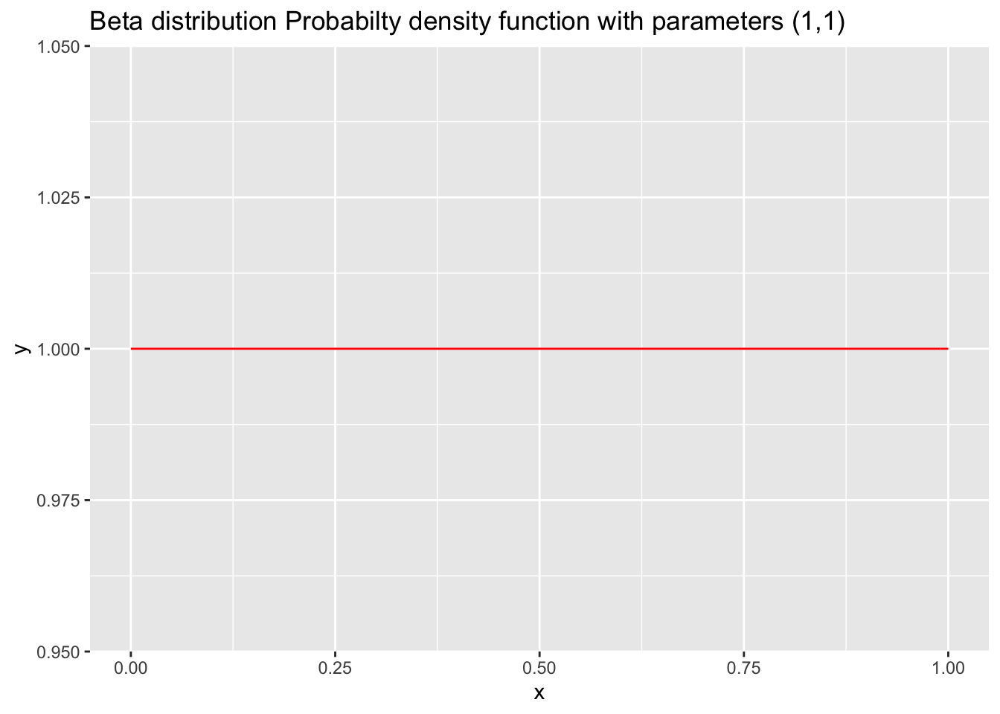
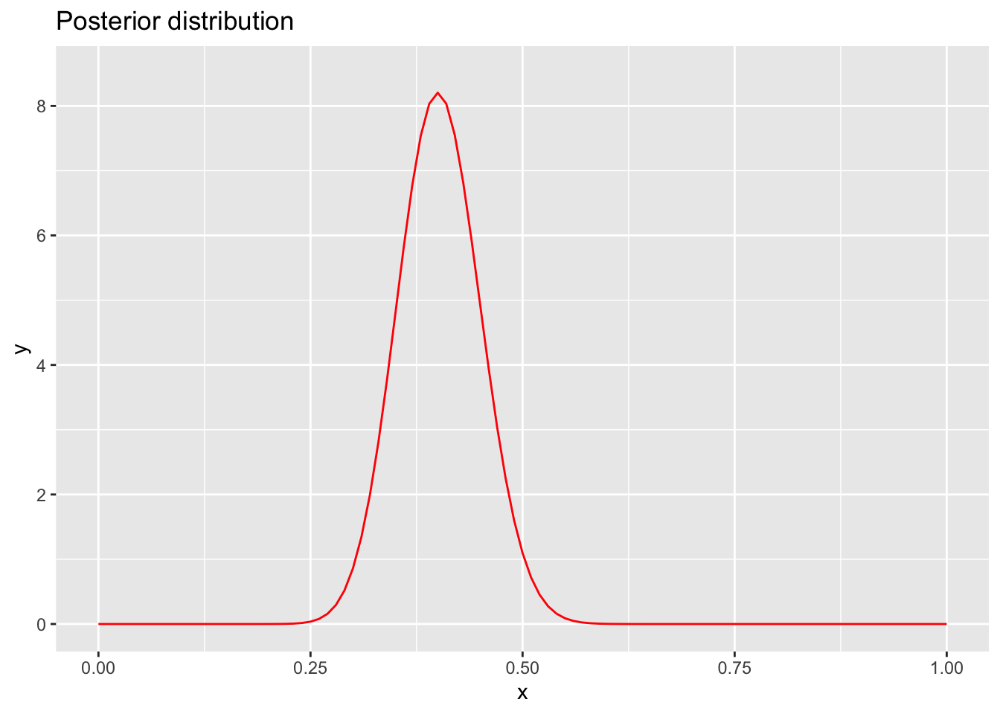

Bayesian Inference
Anthony Hung
2019-05-06
Last updated: 2019-07-02
Checks: 5 1
Knit directory: MSTPsummerstatistics/
This reproducible R Markdown analysis was created with workflowr (version 1.3.0). The Checks tab describes the reproducibility checks that were applied when the results were created. The Past versions tab lists the development history.
The R Markdown file has unstaged changes. To know which version of the R Markdown file created these results, you’ll want to first commit it to the Git repo. If you’re still working on the analysis, you can ignore this warning. When you’re finished, you can run wflow_publish to commit the R Markdown file and build the HTML.
Great job! The global environment was empty. Objects defined in the global environment can affect the analysis in your R Markdown file in unknown ways. For reproduciblity it’s best to always run the code in an empty environment.
The command set.seed(20180927) was run prior to running the code in the R Markdown file. Setting a seed ensures that any results that rely on randomness, e.g. subsampling or permutations, are reproducible.
Great job! Recording the operating system, R version, and package versions is critical for reproducibility.
Nice! There were no cached chunks for this analysis, so you can be confident that you successfully produced the results during this run.
Great! You are using Git for version control. Tracking code development and connecting the code version to the results is critical for reproducibility. The version displayed above was the version of the Git repository at the time these results were generated.
Note that you need to be careful to ensure that all relevant files for the analysis have been committed to Git prior to generating the results (you can use wflow_publish or wflow_git_commit). workflowr only checks the R Markdown file, but you know if there are other scripts or data files that it depends on. Below is the status of the Git repository when the results were generated:
Ignored files:
Ignored: .DS_Store
Ignored: .RData
Ignored: .Rhistory
Ignored: .Rproj.user/
Ignored: analysis/.RData
Ignored: analysis/.Rhistory
Unstaged changes:
Modified: analysis/Bayes.Rmd
Modified: analysis/CLT.Rmd
Modified: analysis/introR.Rmd
Modified: analysis/markov.Rmd
Note that any generated files, e.g. HTML, png, CSS, etc., are not included in this status report because it is ok for generated content to have uncommitted changes.
These are the previous versions of the R Markdown and HTML files. If you’ve configured a remote Git repository (see ?wflow_git_remote), click on the hyperlinks in the table below to view them.
| File | Version | Author | Date | Message |
|---|---|---|---|---|
| html | 397882b | Anthony Hung | 2019-05-30 | Build site. |
| Rmd | 2debade | Anthony Hung | 2019-05-30 | commit before republish |
| html | 2debade | Anthony Hung | 2019-05-30 | commit before republish |
| html | 6d3e1c8 | Anthony Hung | 2019-05-28 | Build site. |
| Rmd | 4fcd1d0 | Anthony Hung | 2019-05-28 | commit before republish |
| html | 4fcd1d0 | Anthony Hung | 2019-05-28 | commit before republish |
| html | c117ef1 | Anthony Hung | 2019-05-27 | Build site. |
| Rmd | c3c7b6e | Anthony Hung | 2019-05-27 | Bayesian |
| html | c3c7b6e | Anthony Hung | 2019-05-27 | Bayesian |
| html | b291d24 | Anthony Hung | 2019-05-24 | Build site. |
| Rmd | a321d7b | Anthony Hung | 2019-05-24 | commit before republish |
| html | a321d7b | Anthony Hung | 2019-05-24 | commit before republish |
| html | c4bdfdc | Anthony Hung | 2019-05-22 | Build site. |
| Rmd | dd1e411 | Anthony Hung | 2019-05-22 | before republishing syllabus |
| html | 096760a | Anthony Hung | 2019-05-18 | Build site. |
| html | da98ae8 | Anthony Hung | 2019-05-17 | Build site. |
| Rmd | 239723e | Anthony Hung | 2019-05-08 | Update learning objectives |
| Rmd | 8860e57 | Anthony Hung | 2019-05-06 | Finalized schedule for classes |
| html | 8860e57 | Anthony Hung | 2019-05-06 | Finalized schedule for classes |
Introduction
Bayesian inference is a fancy term for educated guessing. In essesence, in Bayesian inference we take prior information that we know about the world and use it to evaluate data that we are presented with to draw educated conclusions about the world.
Our objectives today include learning about Bayes theorem and its connections to conditional probability, likelihood ratios for comparing specified models, and applying Bayes theorem to inference problems where we would like to compare between two models of reality.
Bayes theorem
Before we delve into Bayesian inference, we must first start by covering Bayes Theorem. Bayes Theorem is a result that comes from probability and describes the relationship between conditional probabilities.
Let us define A and B as two separate types of events. P(A|B), or “the probability of A given B” denotes the conditional probability of A occurring if we know that B has occurred. Likewise, P(B|A) denotes “the probability of B given A”. Bayes theorem relates P(A|B) and P(B|A) in a deceptively simple equation.
Derivation of Bayes theorem
https://oracleaide.files.wordpress.com/2012/12/ovals_pink_and_blue1.png
{kind=link}
From our definition of conditional probability, we know that P(A|B) can be defined as the probability that A occurs given that B has occured. This can be written mathematically as:
\[P(A|B) = \frac{P(A \cap B )}{P(B)}\]
Here, \(\cap\) denotes the intersection between A and B (i.e. “A AND B occur together”). To calculate the probability of A conditional on B, we first need to find the probability that B has occured. Then, we need to figure out out of the situations where B has occured, how often does A also occur?
In a similar way, we can write P(B|A) mathematically:
\[P(B|A) = \frac{P(B \cap A )}{P(A)}\]
Since \(P(B \cap A )=P(A \cap B)\) (does this make sense?), we can combine the two equations:
\[P(A|B)P(B) = P(B \cap A ) = P(B|A)P(A)\]
If we divide both sides by P(B):
\[P(A|B) = \frac{P(B|A )P(A)}{P(B)}\]
This is Bayes theorem! Notice that using this equation, we can connect the two conditional probabilities. Oftentimes, knowing this relationship is extremely useful because we will know P(B|A) but want to compute P(A|B). Let’s explore an example.
Applying Bayes theorem: Example of screening test
Let us assume that a patient named John goes to a see a doctor to undergo a screening test for an infectious disease. The test that is performed has been previously researched, and it is known to have a 99% reliability when administered to patients like John. In other words, 99% of sick people test positive in the test and 99% of healthy people test negative. The doctor has prior knowledge that 1% of people in general will have the disease in question. If the patient tests positive, what are the chances that he is sick?
Let’s solve this problem through applying Bayes theorem:
\[P(A|B) = \frac{P(B|A )P(A)}{P(B)}\]
First, we need to define what we mean by each of the terms as they relate to the question.
We can define P(A) as the probability that John is sick, and P(B) as the probability that John tests positive. If John is a normal every-day person, then we can use the Doctor’s knowledge that 1% of the population is sick as P(A).
P(A|B), the probability that John is sick given that he tests positive, is exactly what we want to calculate!
However, we are given only the other conditional probability, P(B|A) or the probability that a sick person tests positive (0.99).
Great. We have all the quantities we need to plug in to Bayes theorem to get our answer, except for P(B), the probability that a person tests positive. In order to calculate this, we can use the equation:
\[P(B) = P(B|A)P(A) + P(B| A^c)P(A^c)\]
Here, \(A^c\) denotes A not happening, in this case “John is not sick.” In essence, A can either be true or not, so the two terms should capture all possible scenarios where B can occur. In this case, what is \(P(B|A^c)\)?
\[P(A|B) = \frac{P(B|A )P(A)}{P(B|A)P(A) + P(B| A^c)P(A^c)}\]
Notice that the first term in the denominator is the same as the numerator. Let’s plug in our values and solve the problem.
\[P(A|B) = \frac{(0.99)(0.01)}{(0.99)(0.01) + (0.01)(0.99)} = \frac{1}{2}\]
Bayes theorem using a prior probability distribution
Note that we usually will not have a clean, single point statistic summary of the prior probability of an event. For example, in the disease screening example above we are told that the population prevalence of the disease is known and measured to be 0.01. However, as with all statistics, there will be a confidence interval associated with that measurement. Oftentimes, when we use Bayesian statistics we want to be able to capture the uncertainty in our estimates of parameters that are used in our calculations to give a more accurate picture of the confidence we have in our inferences. In fact, this advantage is the major motivating factor behind Bayesian statistics in the first place. Using a probability distribution as our prior probability will lead to our posterior probability being a distribution as well, thereby capturing the uncertainty we have in our inference, or “guess,” at the model parameters in question. If we have time at the end of class we will explore an example of this in an exercise.
Likelihoods and Likelihood ratios
Likelihood vs probability
Probability
Recall from our previous class on probability distributions that the definition of probability can be visualized as the area under the curve of a probability distribution. For example, let’s say that we have a fair coin (P(heads) = 0.5) and we flip it 30 times:
library(ggplot2)Warning: package 'ggplot2' was built under R version 3.5.2library(cowplot)Warning: package 'cowplot' was built under R version 3.5.2
Attaching package: 'cowplot'The following object is masked from 'package:ggplot2':
ggsavelibrary(grid)
x1 <- 5:25
df <- data.frame(x = x1, y = dbinom(x1, 30, 0.5))
ggplot(df, aes(x = x, y = y)) +
geom_bar(stat = "identity", col = "red", fill = c("white")) +
scale_y_continuous(expand = c(0.01, 0)) + xlab("number of heads") + ylab("Density")
| Version | Author | Date |
|---|---|---|
| c3c7b6e | Anthony Hung | 2019-05-27 |
If we would like to find the probability that we would get more than 20 heads in 30 flips, we could calculate the area represented by bars that are greater than 18 on the x axis:
ggplot(df, aes(x = x, y = y)) +
geom_bar(stat = "identity", col = "red", fill = c(rep("white", 14), rep("red", 7))) +
scale_y_continuous(expand = c(0.01, 0)) + xlab("number of heads") + ylab("Density")
| Version | Author | Date |
|---|---|---|
| c3c7b6e | Anthony Hung | 2019-05-27 |
Similarly, we could calculate the probability that we get between 9 and 13 heads:
ggplot(df, aes(x = x, y = y)) +
geom_bar(stat = "identity", col = "red", fill = c(rep("white", 5), rep("red", 4), rep("white", 12))) +
scale_y_continuous(expand = c(0.01, 0)) + xlab("number of heads") + ylab("Density")
| Version | Author | Date |
|---|---|---|
| c3c7b6e | Anthony Hung | 2019-05-27 |
In each case, notice that the shape of the distribution does not change. The only thing that changes is the area that we shade in. In mathematical terms, in the first case we are calculating:
\[P(num\_heads > 20 | Binom(n=30, p=0.5))\]
and in the second:
\[P(9< num\_heads < 13 | Binom(n=30, p=0.5))\]
What is changing is the left side of the | . The shape of the distribution stays the same. When we discuss probabilities, we are talking about the areas under a fixed distribution (model).
Likelihood
So what about likelihood? Before we look at it graphically, let’s define what we mean by the term. “The likelihood for a model is the probability of the data under the model.” Mathematically,
\[L(Model;Data) = P(Data|Model)\]
This may look the same as what we did before, but in this case our data are fixed, not the distribution. Instead of asking, “If I keep my distribution constant, what is the probability of observing something?” with likelihood we are asking “Given that I have collected some data, how well does a certain distribution fit the data?”
Let’s assume the same situation we did for probability with the coin. In this case, we do not know if the coin is actually fair (P(heads = 0.5), or if it is rigged (e.g. P(heads = 0.6). We flip the coin 30 times and observe 20 heads.
What is the likelihood for our fair model (\(Binom(n=30, p=0.5)\)) given that we observe these data? In other words, how well does the model as paramterized fit our observations?
\[L(Model;Data) = P(num\_heads = 20|Binom(n=30, p=0.5))\]
Let’s look at this graphically.
ggplot(df, aes(x = x, y = y)) +
geom_bar(stat = "identity", col = "red", fill = c(rep("white", 15), rep("red", 1), rep("white", 5))) +
scale_y_continuous(expand = c(0.01, 0)) + xlab("number of heads") + ylab("Density")
| Version | Author | Date |
|---|---|---|
| c3c7b6e | Anthony Hung | 2019-05-27 |
We can also compute the exact probability using the “dbinom” function in R.
dbinom(x = 20, size = 30, prob = 0.5)[1] 0.0279816Okay. How well does our data fit a rigged coin model, where the P(heads = 0.6)? What is the likelihood for the rigged coin model given our data?
\[L(Model;Data) = P(num\_heads = 25|Binom(n=30, p=0.6))\]
Let’s look at this graphically.
x1 <- 5:25
df_rigged <- data.frame(x = x1, y = dbinom(x1, 30, 0.6))
ggplot(df_rigged, aes(x = x, y = y)) +
geom_bar(stat = "identity", col = "red", fill = c(rep("white", 15), rep("red", 1), rep("white", 5))) +
scale_y_continuous(expand = c(0.01, 0)) + xlab("number of heads") + ylab("Density")
| Version | Author | Date |
|---|---|---|
| c3c7b6e | Anthony Hung | 2019-05-27 |
We can also compute the exact probability using the “dbinom” function in R.
dbinom(x = 20, size = 30, prob = 0.6)[1] 0.1151854It looks like the likelihood for the rigged coin model is higher! But is it high enough for us to say that the coin is rigged? Under both models, the probability of obtaining 20 heads is not that high, and we may want to base our conclusions on more robust statistics than a simple “it’s higher, therefore it’s true” heuristic. One way we can compare likelihoods is through likelihood ratios.
Likelihood ratios
Problem
Let’s explore an example of two bags containing white and black balls. Both bags contain 100 balls, but Bag #1 contains 50 white and 50 black balls, while Bag #2 contains 75 white and 25 black balls.
You are given one of the two bags and draw 10 balls from the bag (with replacement, putting the chosen ball back into the bag after each time you draw a ball). From doing this, you get: {BWBWBWWWWW}. Which bag do you have?
Solution: Likelihood ratio
Here, we are trying to decide between two models (bag #1 and bag #2), that could have generated our observed data ({BWBWBWWWWW}). Let’s calculate the likelihoods for each model (\(M_1\) and \(M_2\)). Question: What type of distribution should we use to model the result of a single draw from a bag?
\[P(x|M_1) = \prod\limits_ip_{1}^{x_i} (1-p_1)^{1-x_i}\]
and
\[P(x|M_2) = \prod\limits_ip_{2}^{x_i} (1-p_2)^{1-x_i}\]
where x is a vector of 0s and 1s representing black and white balls respectively, and i denotes a single observation (single draw of a ball from the mystery bag). In other words, \(x_1 = 0\) means that the first ball drawn was black. \(p_{1}, p_{2}\) denote the probability of drawing a white ball from bag 1 and bag 2 respectively (\(p_{1} = 0.5, p_{2} = 0.75\)).
Plugging in numbers,
\[P(x|M_1) = 0.5*0.5*0.5*0.5*0.5*0.5*0.5*0.5*0.5*0.5 = 0.0009765625 \]
\[P(x|M_2) = 0.25*0.75*0.25*0.75*0.25*0.75*0.75*0.75*0.75*0.75 = 0.002085686 \]
Notice that in addition to \(M_1\)’s likelihood being larger, both likelihood values are extremely small. Why might that be the case?
The likelihood ratio comparing \(M_1\) and \(M_2\) is defined as:
\[LR(M_1, M_2) := \frac{L(M_1; Data)}{L(M_2; Data)}\]
Large values of \(LR(M_1, M_2)\) indicate support for M1. Small values of \(LR(M_1, M_2)\) indicate support for model \(M_2\). For example, a LR = 3 means that the data support \(M_1\) by a factor of 3.
The inverse of \(LR(M_1, M_2)\) is \(LR(M_2, M_1)\).
\[LR(M_1, M_2) = \frac{1}{LR(M_2, M_1)} = \frac{L(M_1; Data)}{L(M_2; Data)}\]
In our example, the \(LR(M_1, M_2) = \frac{L(M_1; Data)}{L(M_2; Data)} = \frac{0.0009765625}{0.002085686}= 0.4682212\) \(LR(M_2, M_1) = \frac{1}{LR(M_1, M_2)} = 2.1356\). In other words, the data favor bag #2 by a factor of 2.14. Notice that in contrast to just comparing the magnitude of the likelihoods to see which one is larger, the LR allows you to have a tangible interpretation of how much larger one likelihood is than another and what this means for the amount of support for each model. Note that in the above example, our two models are fully specified (we know exactly how many balls of each type are in each bag). In cases where one or more of the models being compared are not fully specified and instead parameters must be estimated from the data, simply comparing two likelihood ratios is not sufficient and instead a likelihood ratio test (LRT: https://en.wikipedia.org/wiki/Likelihood-ratio_test) must be employed. LRTs are based on an asymptotic approximation of a test statistic involving the LR that approches a \(\chi^2\) distribution.
Bayesian inference
Bayes theorem gives us an alternative way to compare two models that incorporates not only the likelihood ratio, but also the prior information in support of a certain model.
Let’s return to Bayes theorem. Recall the statement:
\[P(A|B) = \frac{P(B|A )P(A)}{P(B)}\]
If we define B to be our observed data, then Bayes theorem becomes:
\[P(A|Data) = \frac{P(Data|A )P(A)}{P(Data)}\]
Notice the \(P(Data|A)\) term is something we’ve talked about earlier, the likelihood. “The likelihood for a model is the probability of the data under the model.” With that in mind, we can now attach names to each of the terms in the equation.
P(A|Data) is known as the posterior probability, or the probability of a model A given some observations.
P(Data|A) is known as the likelihood.
P(A) is known as the prior probability, or the probability of A before we have the observations.
P(Data) is the prior probability that the data themselves are true.
Let us say we have two possible models \(A_0\) and \(A_1\) that could have generated our data that we would like to pick between.
\[P(A_0|Data) = \frac{P(Data|A_0 )P(A_0)}{P(Data)}\]
and
\[P(A_1|Data) = \frac{P(Data|A_1 )P(A_1)}{P(Data)}\]
If we take the ratio of the two posterior probabilities, we get:
\[\frac{P(A_0|Data)}{P(A_1|Data)} = \frac{\frac{P(Data|A_0 )P(A_0)}{P(Data)}}{\frac{P(Data|A_1 )P(A_1)}{P(Data)}} = \frac{P(Data|A_0 )P(A_0)}{P(Data|A_1 )P(A_1)} = \frac{P(Data|A_0 )}{P(Data|A_1 )}\cdot \frac{P(A_0)}{P(A_1)}\]
Therefore,
\[\frac{P(A_0|Data)}{P(A_1|Data)} = \frac{P(A_0)}{P(A_1)} \cdot \frac{P(Data|A_0 )}{P(Data|A_1 )}\]
Written out in words and using the term “Odds” to represent the ratio of the probabilities of the two models, we get:
Just like before, the prior odds refers to the ratio of the probabilties of the two models before considering the observed data, and the posterior odd refers to the ratio of the probabilities after considering the observed data.
Now we can appreciate how viewing this model selection problem using Bayesian inference holds some advantages over our previous strategy of simply using the Likelihood ratio. Suppose that one of your models is much more likely to be true than the other based on prior evidence or belief. For example, in the 2 bag example we explored earlier, imagine that you had been given a hint earlier that the person in charge of the bag game almost always picks bag #1 to give to the participant and almost never picks bag #2. If you were to simply calculate the likelihood ratio to compare the two models of reality, you would not be able to factor in this extra information. The Prior odds term in the Bayesian case allows you to take into account extra information such as this to great effect. Let’s explore an example:
Example of Bayesian inference in selecting between two models:
Let’s return to the example earlier of the two bags. Imagine that instead of there being two different bags, there were 10 different bags, 9 of bag type #1 (corresponding to containing 50 white and 50 black balls), and 1 of bag type #2 (corresponding to containing 75 white and 25 black balls). You draw 10 balls from a randomly chosen bag and they are of the colors {BWBWBWWWWW}. Let’s compute the posterior odds of the bag being of type #1 vs the bag being of type #2.
\[\frac{P(type_1|BWBWBWWWWW)}{P(type_2|BWBWBWWWWW)} = \frac{P(type_1)}{P(type_2)} \cdot \frac{P(BWBWBWWWWW|type_1 )}{P(BWBWBWWWWW|type_2 )}\]
We previously already calculated the second term (remember that it is just the LR). We know that there are 9 bags of type #1 and 1 bags of type #2. Thereore, the prior odds will be 9/1.
\[\frac{P(type_1|BWBWBWWWWW)}{P(type_2|BWBWBWWWWW)} = \frac{9}{1}\cdot 0.4682212 = 4.213991\]
Notice that our conclusion has flipped! The data, when considered in light of the prior information about the probability of a certain bag type being chosen, result in a conclusion that we would favor calling the bag in front of us a type #1 bag at an odds of 4.21 to 1.
Question: What happens if instead of 9 bags being of type #1 and 1 being of type #2, there were 5 bags of each type?
Exercise: Bayes Rule using probability distributions
Let’s return to Bayes Rule and instead of plugging in a single point estimate for our prior probability, enter in a prior probability distribution.
In using Bayesian inference, there are four key steps to follow:
- Identify the type of data you are working with (continuous, discrete, binary, etc)
- Construct a model for your likelihood
- Specify a prior distribution for the parameter of interest
- Apply Bayes Rule (Posterior \(\propto\) Prior * Likelihood)
Let’s say we have a coin in front of us and we are not sure what the true probability of getting a heads using this coin is. We would like to infer what the probability is using Bayesian inference. Question: How would we estimate the probability of getting heads using frequentist statistics?
Let’s follow the steps for Bayesian inference.
We are going to flip this coin to collect data on it, so our collected data will be in the form of heads and tails (binary data if we represent heads and tails as 1s and 0s respectively). If we flip the coin mulitple times, then our data will look like count data (i.e. the number of heads we get in X flips).
What would be a good distribution to model the probability of obtaining a certain number of heads from an X number of coin flips?
Binomial distribution We will use this distribution to model our likelihood. The Binomial likelihood function looks like this:
\[L(p | n, k) = f(k;\theta) =\binom{n}{k}\theta^k (1-\theta)^{n-k}\]
Where k represents number of heads, n represents the total number of coin flips, and \(\theta\) represents the probability of getting a heads in a single trial. Notice that the Binomial ikelihood function is just the probability mass function of the binomial distribution.
- What is our prior distribution for the probability of a heads from a single flip of this mystery coin? Since we do not have any idea about what the prior probability of heads is, we can use a uniform prior (a “flat” or “uniformative” prior). A flat prior in this case means that we do not have any reason to believe that one value of P(heads) is more likely to be true than any other. To be precise, we will use a beta prior distribution (https://en.wikipedia.org/wiki/Beta_distribution) with parameters (1,1), which is the same thing as a uniform distribution when evaluated between 0 and 1 (see the graphs below). Since probabilties must be between 0 and 1, this is an appropriate substitution to make. It will make sense why we are using this funny distribution later. (Note that we don’t need to use a named distribution as our prior distribution. We could distribute the weights we want to apply to each possible value of P(heads) however we like and still use Bayesian inference.)
ggplot(data = data.frame(x = c(0, 1)), aes(x)) +
stat_function(fun = dunif, args = list(min=0, max=1 ), color = "red", linetype = "solid") + ggtitle("Uniform distribution Probabilty density function")
| Version | Author | Date |
|---|---|---|
| 2debade | Anthony Hung | 2019-05-30 |
ggplot(data = data.frame(x = c(0, 1)), aes(x)) +
stat_function(fun = dbeta, args = list(shape1 = 1, shape2 = 1), color = "red", linetype = "solid") + ggtitle("Beta distribution Probabilty density function with parameters (1,1)")
| Version | Author | Date |
|---|---|---|
| 2debade | Anthony Hung | 2019-05-30 |
The PDF of the beta distribution looks like this (B represents the beta function, which is not important to consider for today’s discussion):
\[f(x;\alpha, \beta) = \frac{1}{B(\alpha, \beta)}x^{\alpha-1}(1-x)^{\beta-1}\]
Plugging in our parameter values for \(\alpha and \beta\) and substituting \(\theta\) for x, we get
\[f(\theta;1,1) \propto \theta^{1-1}(1-\theta)^{1-1} = 1\]
which is the same as the uniform distribution.
- Now that we’ve specified our likelihood function and prior distribution, we can move ahead to generating data and plugging it into Bayes theorem!
Imagine we flip the coin 100 times and get 40 heads. (n = 100, k = 40). Recall Bayes theorem:
\[P(A_0|Data) = \frac{P(Data|A_0 )P(A_0)}{P(Data)}\]
We can plug in our likelihood and prior distributions:
\[P(A_0|Data) = \frac{(\binom{100}{40}\theta^{40} (1-\theta)^{100-40})(\theta^{1-1}(1-\theta)^{1-1})}{P(Data)} \propto \theta^{40} (1-\theta)^{100-40})(\theta^{1-1}(1-\theta)^{1-1} = \theta^{40+1-1} (1-\theta)^{100-40+1-1}\]
Notice that we moved from an = to a \(\propto\). This is done because calculating the P(Data) is difficult, and so is including the math required to evaluate the Beta function and the 100 choose 40 function. However, in ignoring these extraneous normalizing constants (which exist in the equation in order to make our expression equal a probability that sums to 1), we gain a much simpler interpretation of our posterior probability. Recognize that the term \(\theta^{40+1-1} (1-\theta)^{100-40+1-1}\) resembles the PDF for a beta distribution: \(f(x;\alpha, \beta) = \frac{1}{B(\alpha, \beta)}x^{1-\alpha}(1-x)^{\beta-1}\), minus the normalizing constant that contains the Beta function, if we set \(\alpha = 41\) and \(\beta = 61\). Actually, due to a mathematical property that links the binomial and Beta distributions, we know for a fact that the posterior distribution is Beta distributed.
This is because the Beta distribution is a conjugate prior for the binomial distribution. This means that if the likelihood function is binomial and the prior distribution is a Beta distribution then the posterior distribution is also a Beta distribution. There are many pairs of distributions that have this relationship, and using these relationships allows us to easily work with posterior distributions that come out of applications of Bayes theorem. In cases where conjugate distributions are not used, more sophisticated methods such as Markov Chain Monte Carlo can be used to characterize the posterior distribution.
Since we now know that the posterior distribution is distributed as a Beta distribution with \(\alpha = 41\) and \(\beta = 61\), we can fully determine the posterior distribution and fill in the normalizing constant.
\[P(A_0| Data) \sim Beta(\alpha = 41, \beta = 61) = \frac{1}{B(41, 61)}x^{41-1}(1-x)^{61-1}\]
Because we know the distribution, we can take advantage of known properties of the Beta distribution to easily determine the mean (\(\frac{\alpha}{\alpha+\beta}\)), variance (\(\frac{\alpha\beta}{(\alpha+\beta)^2(\alpha+\beta+1)}\)), and other properties of the posterior distribution. We can also graph it:
ggplot(data = data.frame(x = c(0, 1)), aes(x)) +
stat_function(fun = dbeta, args = list(shape1 = 41, shape2 = 61), color = "red", linetype = "solid") + ggtitle("Posterior distribution") + ylim(0, 8.5)
| Version | Author | Date |
|---|---|---|
| 2debade | Anthony Hung | 2019-05-30 |
Where is the mode of our distribution? Does this make sense given the data we were presented with?
What would happen to the shape of the posterior distribution if our data were less convincing (i.e. there was less data)? Let’s see if instead of 100 coin flips being fed into our inference, we only flipped the coin 20 times (and got 8 heads, or 40%):
ggplot(data = data.frame(x = c(0, 1)), aes(x)) +
stat_function(fun = dbeta, args = list(shape1 = 9, shape2 = 13), color = "red", linetype = "solid") + ggtitle("Posterior distribution")+ ylim(0, 8.5)
| Version | Author | Date |
|---|---|---|
| 2debade | Anthony Hung | 2019-05-30 |
As you can see, if our data are less convincing, our confidence in the inference we have made about the probability of getting a heads from the coin is more spread out around the mode, reflecting our uncertainty in the estimate. In fact, if we have very little data (e.g. 5 coin flips), our distribution starts to look more and more like our prior distribution (flat).
ggplot(data = data.frame(x = c(0, 1)), aes(x)) +
stat_function(fun = dbeta, args = list(shape1 = 3, shape2 = 4), color = "red", linetype = "solid") + ggtitle("Posterior distribution")+ ylim(0, 8.5)
| Version | Author | Date |
|---|---|---|
| 2debade | Anthony Hung | 2019-05-30 |
What happens if we have a huge amount of data (1000 flips, 400 heads)?
ggplot(data = data.frame(x = c(0, 1)), aes(x)) +
stat_function(fun = dbeta, args = list(shape1 = 401, shape2 = 601), color = "red", linetype = "solid") + ggtitle("Posterior distribution")+ ylim(0, 8.5)
| Version | Author | Date |
|---|---|---|
| 2debade | Anthony Hung | 2019-05-30 |
In essence, you can think about a Bayesian inference as a weighted average of our prior expectations about the world and the observations we have about the world. If we have a lot of confidence in our prior (a “strong” prior), it may take us a lot of evidence to persuade us to change our minds. Likewise, if we have very little evidence, we will place less weight on that evidence when making an inference. If we have a lot of evidence, we will be much more likely to rely on this evidence (the prior matters less and less). We can see an interactive illustration of this fact using this applet: http://stephens999.github.io/fiveMinuteStats/shiny_normal_example.html (the applet illustrates a situation where you have a normal prior and normal likelihood, and the normal distribution is a conjugate prior for itself!)
Summary
In using Bayesian inference, there are four key steps to follow:
- Identify the type of data you are working with (continuous, discrete, binary, etc)
- Construct a model for your likelihood
- Specify a prior distribution for the parameter of interest
- Apply Bayes Rule (Posterior \(\propto\) Prior * Likelihood)
The major motivations behind using Bayesian inference are to (1) allow you to take into account prior information you have about a particular model of how the world is when trying to make educated guesses about the world (2) to allow you to obtain a measure of how confident you are in the educated guesses you come up with using inference.
sessionInfo()R version 3.5.1 (2018-07-02)
Platform: x86_64-apple-darwin15.6.0 (64-bit)
Running under: macOS 10.14.5
Matrix products: default
BLAS: /Library/Frameworks/R.framework/Versions/3.5/Resources/lib/libRblas.0.dylib
LAPACK: /Library/Frameworks/R.framework/Versions/3.5/Resources/lib/libRlapack.dylib
locale:
[1] en_US.UTF-8/en_US.UTF-8/en_US.UTF-8/C/en_US.UTF-8/en_US.UTF-8
attached base packages:
[1] grid stats graphics grDevices utils datasets methods
[8] base
other attached packages:
[1] cowplot_0.9.4 ggplot2_3.1.1
loaded via a namespace (and not attached):
[1] Rcpp_1.0.1 knitr_1.23 whisker_0.3-2 magrittr_1.5
[5] workflowr_1.3.0 tidyselect_0.2.5 munsell_0.5.0 colorspace_1.4-1
[9] R6_2.4.0 rlang_0.3.4 dplyr_0.8.1 stringr_1.4.0
[13] plyr_1.8.4 tools_3.5.1 gtable_0.3.0 xfun_0.7
[17] withr_2.1.2 git2r_0.25.2 htmltools_0.3.6 assertthat_0.2.1
[21] yaml_2.2.0 lazyeval_0.2.2 rprojroot_1.3-2 digest_0.6.19
[25] tibble_2.1.2 crayon_1.3.4 purrr_0.3.2 fs_1.3.1
[29] glue_1.3.1 evaluate_0.14 rmarkdown_1.13 labeling_0.3
[33] stringi_1.4.3 pillar_1.4.1 compiler_3.5.1 scales_1.0.0
[37] backports_1.1.4 pkgconfig_2.0.2